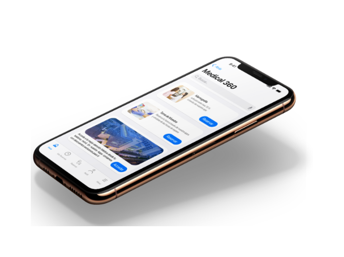

Caso de estudio personal · Salud
Medical 360
Partió como un MVP simple para agendar horas médicas. Al entrevistar a usuarios reales aparecieron muchas más oportunidades de mejora, y el proyecto evolucionó hacia una app pensada para descongestionar los centros de salud: menos tiempos de espera y menos trámites presenciales que perfectamente pueden resolverse a distancia.

summarize02 · Resumen
Resumen del proyecto
Medical 360 es un caso de estudio personal de una app móvil de agendamiento médico. Nació como un MVP enfocado en un solo flujo — reservar horas médicas de forma simple — pero la investigación con usuarios reales reveló una oportunidad más grande: usar la misma app para reducir la congestión de los centros de salud, acortando tiempos de espera y evitando trámites presenciales que se pueden resolver de forma remota.
El MVP se diseñó en 2023, y todo lo que se detalla a continuación — desde el research hasta la solución final — corresponde a esta primera etapa. En 2026 retomé el proyecto para una segunda etapa de mejora, que se detalla al final de este caso de estudio.
domain03 · Contexto
Contexto
El proyecto nace en el contexto post-pandemia: el COVID-19 obligó a que casi todos los trámites se volvieran digitales, y quedó en evidencia que el sistema de salud no estaba preparado para algo así — ni en sus procesos médicos ni en su servicio al paciente. Medical 360 es una app pensada principalmente para clínicas y consultas médicas privadas, con el objetivo de poner todo el servicio clínico al alcance de la mano, tanto para el equipo clínico como para los pacientes.

error04 · Problema / Oportunidad
Problema / Oportunidad
El acceso a la salud es, y siempre será, una prioridad: tarde o temprano todas las personas necesitamos algún tipo de atención médica. Aun así, conseguir una hora médica seguía siendo un trámite tedioso — largas esperas en el call center clínico, llamadas restringidas a ciertos días y horarios, y en muchos casos ni siquiera una respuesta resolutiva para el paciente.
La mayoría de las clínicas seguían resolviendo sus trámites por teléfono o de forma presencial, generando filas, tiempos de espera y un riesgo de contagio evitable — mientras la gente ya llevaba su vida entera en el celular. La oportunidad era llevar el servicio clínico al dispositivo que las personas ya usan para casi todo.
flag05 · Objetivos
Objetivos
El objetivo era simple: que las personas obtuvieran respuestas más rápidas y eficientes a sus requerimientos, sin tener que trasladarse hasta un centro de salud, esperar en la línea telefónica ni depender de tener un computador a mano.
La misión de Medical 360, en cuatro objetivos concretos.
- flagOptimizar la eficiencia y la eficacia de las clínicas y consultas médicas privadas.
- flagOptimizar el tiempo de los usuarios (pacientes).
- flagAcercar la relación paciente–médico, con información completa para ambas partes.
- flagMejorar el sistema de salud en general.
badge06 · Mi rol y alcance
Mi rol y alcance
Medical 360 es un caso de estudio personal: llevé el proceso completo de punta a punta, siguiendo la metodología de Design Thinking — empatizar, definir, idear, prototipar y validar.
- check_circleInvestigación: desktop research, benchmarking y entrevistas a usuarios reales.
- check_circleDefinición de persona, POV y arquitectura de la información (card sorting incluido).
- check_circleWireframes, UI y sistema de diseño.
- check_circlePrototipado y testing de usabilidad.
travel_explore07 · Research
Research
Empecé revisando cifras y tendencias (desktop research) y comparando con otras clínicas y apps del rubro (benchmarking). Después encuesté y entrevisté a pacientes reales de una clínica en Puerto Varas para entender cómo piden horas médicas hoy, qué los frustra y qué esperan del servicio: en total se aplicaron 12 encuestas y se realizaron 3 entrevistas, que llevaron a definir el siguiente tipo de usuario como user persona. Más adelante hice un card sorting con Optimal Workshop para entender cómo los usuarios organizan mentalmente la información.
query_statsBenchmarking: evaluando la competencia
Revisé la web en busca de apps que ya resolvieran este problema y encontré muy pocas: la mayoría de las clínicas y consultas orientaron sus mejoras a su página web y su agenda en línea, y no a implementar un servicio a través de dispositivos móviles — las pocas apps que existen, además, no cuentan con actualizaciones vigentes. Analicé en detalle dos de los principales referentes del rubro en Chile.
agendapro
thumb_upFortalezas
- Disponibilidad 24/7 para agendar de forma autónoma.
- Envío de recordatorios automáticos.
- Fichas clínicas digitales.
thumb_downDebilidades
- La app no está bien definida.
- Está más enfocada en satisfacer las necesidades de las clínicas que las de los pacientes.
RedSalud
thumb_upFortalezas
- Disponibilidad 24/7 para agendar de forma autónoma.
- Asociación con varias clínicas del país.
- Interfaz amigable.
thumb_downDebilidades
- App disponible solo para Android.
- Desde su lanzamiento no ha tenido las actualizaciones suficientes, por lo que va quedando cada vez más obsoleta.
- No está disponible para todas las clínicas y consultas.
pollResultado de encuestas
Estas encuestas se realizaron en la ciudad de Puerto Varas, a pacientes de la Clínica Puerto Varas (18 respuestas).
Rango etáreo
Frecuencia de controles médicos
Tiempo de espera en call center
personUser Persona
Una user persona es un perfil ficticio pero basado en datos reales, que representa las necesidades, motivaciones y frustraciones de un tipo de usuario. A partir de las entrevistas y encuestas realizadas, llegamos al siguiente tipo de usuario.

- Nombre
- Andrea Almonacid
- Edad
- 45 años
- Género
- Femenino
- Educación
- Universitaria completa
- Estado civil
- Casada
- Hijos
- 3
- Profesión
- Profesora de Educación Media
“Sin una buena salud, no se puede tener una buena vida.”
sentiment_satisfiedMotivaciones
- Es diabética, por lo que pasa mucho tiempo en clínicas y hospitales — tener un mejor control de su tiempo es fundamental para ella.
- Compatibilizar el tiempo entre su familia y el cuidado de su salud.
sentiment_dissatisfiedFrustraciones
- Perder tiempo en esperas telefónicas y no lograr encontrar horas médicas.
- No contar con una forma más simple y sencilla de agendar sus horas médicas.
- Falta de tiempo para estar con su familia.
insights08 · Hallazgos
Hallazgos
Lo más relevante que encontré durante el research, y que guió las decisiones de diseño.
- insightsCasi no existen apps que resuelvan esto: la mayoría de las clínicas solo mejoraron su web y su agenda online, no su servicio móvil.
- insightsLas pocas apps del rubro que existen están limitadas a una red propia o desactualizadas.
- insightsLos pacientes odian las filas y la espera — y hoy siguen pidiendo horas por teléfono, web de escritorio o de forma presencial.
- insightsHay dos usuarios distintos que atender: el paciente y el equipo clínico, cada uno con sus propias necesidades.
lightbulb09 · Ideación
Ideación
A partir de las entrevistas y las pruebas de usabilidad, prioricé qué funcionalidades tenía sentido incluir primero — separando lo esencial para un MVP de lo deseable para etapas futuras.
check_circleMVP — funcionalidades esenciales
- check_circlePerfil de usuario
- check_circleReserva de horas
- check_circleProcedimientos médicos
- check_circleEspecialidades médicas
- check_circleRegístrate
- check_circleContáctanos
- check_circleMis reservas
- check_circleCómo llegar
add_circleDeseables — próximas etapas
- add_circleResultado de exámenes
- add_circlePresupuestos médicos
- add_circlePagos
- add_circleChat online
- add_circleRecetas médicas
- add_circleNúmero online para toma de muestras
account_tree10 · Arquitectura / User Flow
Arquitectura / User Flow
Para que la arquitectura reflejara cómo piensan realmente los usuarios (y no cómo yo creía que debía organizarse), hice un card sorting con Optimal Workshop: los usuarios agruparon y etiquetaron las funcionalidades por su cuenta. Esos resultados, analizados con una matriz de similitud y un dendograma, definieron la estructura final de la información.


Con la información ya organizada, definí el taskflow — el camino ideal que recorre el usuario para completar una solicitud — y el userflow completo, incluyendo los posibles errores en el camino, para anticiparme a ellos antes de llegar a las pantallas.
grid_view11 · Wireframes
Wireframes
El proceso pasó por tres niveles de fidelidad: primero bocetos a mano para darle forma rápida a la idea, después una digitalización en Figma en fidelidad media (todavía sin aplicar los patrones visuales definitivos), y finalmente wireframes de alta fidelidad ya con la interfaz visual definida.


palette12 · UI Kit
UI Kit
La base visual partió de un moodboard — toda creación necesita una inspiración — y de un sistema de grillas: usé las grillas estándar de iOS para que la app fuera consistente, con cada elemento ubicado donde tenía que estar. A partir de ahí definí la paleta, la tipografía y el UI kit propio de Medical 360: botones, campos de texto, switches, íconos, tarjetas, teclados, pickers, toolbar, barras de navegación y alertas.
Aa — Títulos principales

smartphone13 · Prototipo
Prototipo
Con las pantallas de alta fidelidad armé un prototipo navegable en Figma con el flujo completo, listo para las pruebas de usabilidad.

fact_check14 · Testing / Validación
Testing / Validación
Con el prototipo funcional en fidelidad media, testeé a usuarios reales para revelar problemas de usabilidad, y complementé el proceso con una evaluación heurística.
Complementé el testing con usuarios con una evaluación heurística basada en los 10 principios de usabilidad de Nielsen, para detectar problemas de usabilidad que no siempre salen a la luz en las pruebas con usuarios.
| Principio | Cumple | No cumple | Detalle |
|---|---|---|---|
| Visibilidad del estado del sistema | sentiment_satisfied | La app es amigable y le hace saber al usuario en dónde se encuentra. | |
| Relación entre sistema y mundo real | sentiment_satisfied | El usuario lo siente como algo cotidiano. | |
| Libertad y control por parte del usuario | sentiment_satisfied | El usuario tiene la libertad de corregir sus errores. | |
| Consistencia y estándares | sentiment_satisfied | — | |
| Prevención de errores | sentiment_dissatisfied | Hace falta un mejor trabajo en cuanto a la prevención de errores. | |
| Minimizar el uso de memoria | sentiment_satisfied | Hace falta un mejor trabajo en cuanto a la prevención de errores. | |
| Flexibilidad y eficiencia de uso | sentiment_satisfied | — | |
| Diseño minimalista | — | ||
| Reconocer, diagnosticar y recuperarse de los errores | sentiment_dissatisfied | Hay que realizar mejoras en las próximas versiones. | |
| Ayuda y documentación | sentiment_dissatisfied | No hay documentación. |
sentiment_very_satisfiedMétricas de satisfacción
check_circle15 · Solución final
Solución final
Medical 360 busca que las clínicas privadas y consultas médicas entreguen, cada vez, un mejor servicio — evitando que sus pacientes pierdan tiempo de forma innecesaria y logrando que se sientan más satisfechos con la atención clínica que reciben.
El resultado: una app que centraliza la reserva de horas, los procedimientos médicos, las especialidades y el historial clínico del paciente — pensada tanto para el paciente como para el equipo clínico.
trending_up16 · Resultados / Impacto
Resultados / Impacto
El impacto real y medible del proyecto una vez implementado (métricas de negocio o de producto).
school17 · Aprendizajes
Aprendizajes
Qué me llevo de este proyecto como diseñadora, dando mis primeros pasos en UX/UI.
- schoolMedical 360 fue mi primer acercamiento real al UX/UI: el proyecto final del curso de Diseño UX/UI de Coderhouse, donde aprendí de cero todo el proceso completo — research, metodología, definición del problema, prototipado en Figma y testing.
- schoolAprendí a conocer de verdad al usuario: a levantar información a través de entrevistas, entender sus frustraciones reales y traducir eso en decisiones de diseño, no solo en pantallas.
- schoolFue también mi primer contacto con Figma, así que buena parte del tiempo se fue en aprender la herramienta al mismo tiempo que diseñaba — por eso el proceso se alargó más de lo esperado y los prototipos de esta primera etapa no llegaron al nivel de pulido que me hubiese gustado.
- schoolCon la base que dejó este primer proyecto entendí que la solución del MVP era un buen punto de partida, pero no la más integral posible — esa fue justamente la motivación para retomarlo en la segunda etapa, ya con más experiencia.
rocket_launch18 · Segunda etapa (2026)
Segunda etapa: de MVP a solución integral
El MVP de Medical 360 se diseñó en 2023 y validó lo esencial: que resolver el agendamiento médico desde el celular ya resolvía un problema real para los pacientes. En 2026 retomé el proyecto para una segunda etapa de mejora, con foco en ampliar la propuesta más allá de solo agendar horas — acercando a la app trámites que hoy obligan a una visita presencial y que perfectamente se pueden resolver a distancia — siempre con el mismo objetivo de fondo: descongestionar los centros de salud y reducir los tiempos de espera.
- add_circleResultado de exámenes disponibles directamente en la app.
- add_circlePresupuestos médicos consultables sin tener que llamar o ir de forma presencial.
- add_circlePagos integrados dentro del mismo flujo.
- add_circleChat online directo con la clínica.
- add_circleRecetas médicas disponibles desde la app.
- add_circleNúmero online para toma de muestras, sin sacarlo de forma presencial.
Esta segunda etapa sigue en desarrollo de contenido — capturas, decisiones de diseño y resultados de esta mejora se irán agregando aquí.
arrow_forwardSiguiente proyecto
Landing page para startup de viajes
Diseño de marca y landing con enfoque en conversión para el lanzamiento de un nuevo producto.
Ver caso de estudio arrow_forward